When exploring central tendency, you can use the following charts based on the data type:
Data Type
Chart Type
Best for
Description
Nominal
Bar Chart
Mode
Displays the frequency of categories.
Ordinal
Bar Chart
Median, Mode
Bars ordered by the rank of categories.
Interval
Histogram
Mean, Median, Mode
Shows frequency distribution of values.
Interval/Ratio
Box Plot (Box-and-Whisker)
Median, Range, Outliers
Displays median, quartiles, and outliers.
Ratio
Histogram or Box Plot
Mean, Median, Mode
Shows frequency distribution or central range.
2. Measurement Types and Appropriate Charts
To visually represent different data types, the following charts are most commonly used:
Data Type
Chart Type
Best for
Description
Nominal
Pie Chart, Bar Chart
Categories, Frequencies
Compares parts to the whole (pie) or shows counts (bar).
Ordinal
Ordered Bar Chart, Dot Plot
Ranked Categories
Ordered bars or dots that reflect the ordinal nature of data.
Interval
Histogram, Line Chart
Continuous Data (e.g., temperature)
Line chart shows changes over time; histogram shows distribution.
Ratio
Scatter Plot, Histogram, Box Plot
Continuous Data with True Zero
Used for numerical data with meaningful zero.
3. Exploring Relationships Between Variables
The following charts are commonly used to explore relationships between two or more variables:
Type of Data
Chart Type
Best for
Description
Nominal vs Nominal
Stacked Bar Chart, Grouped Bar Chart
Comparing two categories
Shows distribution of one nominal variable across levels of another.
Ordinal vs Ordinal
Ordered Bar Chart, Stacked Bar Chart
Comparing two ranked categories
Displays trends in ordered categories.
Nominal/Ordinal vs Interval/Ratio
Box Plot, Violin Plot
Comparing groups for continuous variables
Box plots show central tendency and spread; violin plots show distribution.
Interval vs Interval
Scatter Plot, Line Chart
Correlation or relationship between two continuous variables
Scatter plots show correlation or pattern; line charts show trend over time.
Ratio vs Ratio
Scatter Plot, Bubble Chart
Strength and direction of relationships
Scatter plots can show strength, direction, and outliers; bubble charts add size as a variable.
4. Trends Over Time
If you are looking at trends over time for different data types, consider the following:
Data Type
Chart Type
Best for
Description
Interval/Ratio
Line Chart
Continuous time-based data
Tracks changes over time (e.g., temperature, stock prices).
Nominal
Stacked Line Chart, Stacked Bar Chart
Time-based categories
Shows changes in category proportions over time.
5. Comparing Distributions
When comparing the distribution of data between groups or categories, the following charts are useful:
Data Type
Chart Type
Best for
Description
Interval/Ratio
Histogram, Box Plot
Distribution of continuous data across groups
Histograms show frequency; box plots show median and spread.
Nominal/Ordinal
Bar Chart, Pie Chart
Comparing category proportions
Bar and pie charts compare categories’ proportions.
6. Correlation and Regression
To explore the correlation between two continuous variables or to visualize a regression model:
Type of Data
Chart Type
Best for
Description
Interval/Ratio
Scatter Plot with Regression Line
Correlation or regression analysis
Scatter plots visualize relationships; a regression line adds a trend.
Nominal/Ordinal vs Interval/Ratio
Faceted Scatter Plot, Box Plot
Comparing groups with continuous variables
Shows how groups differ based on continuous measures.
Self-Assessment Questions
What type of chart would you use to display the frequency of different job titles (e.g., teacher, engineer, doctor)?
ANSWER HERE
How would you visualize the relationship between a person’s age and their income?
ANSWER HERE
If you were comparing the median salary of employees across different education levels (e.g., high school, bachelor’s, master’s), which chart type would you use?
ANSWER HERE
Which chart would best show the distribution of exam scores in a class?
ANSWER HERE
What chart would you use to see how sales numbers have changed over the last 10 years?
ANSWER HERE
This ‘cheat’ sheet should help you decide on the most appropriate charts for exploring central tendency, different measurement types, and relationships in their data. It also includes self-assessment questions to ensure you get a good grip of these concepts.
Histogram
Definition
A histogram is an accurate graphical representation of the distribution of a numeric variable. It takes as input numeric variables only. The variable is cut into several bins, and the number of observation per bin is represented by the height of the bar.
Here is an example showing the distribution of the night price of Rbnb apartments in the south of France. Price range is divided per 10 euros interval. For example, there are slightly less than 750 appartements with a night price between 100 and 110 euros:
# Librarieslibrary(ggplot2)# Load dataset from github using base Rdata <-read.table("https://raw.githubusercontent.com/holtzy/data_to_viz/master/Example_dataset/1_OneNum.csv", header=TRUE)# Ensure the data is in a proper data frame and filterfiltered_data <-subset(data, price <300)# Create the histogram using ggplot2ggplot(filtered_data, aes(x = price)) +geom_histogram(breaks =seq(0, 300, 10), fill ="#69b3a2", color ="#e9ecef", alpha =0.9) +ggtitle("Night price distribution of Airbnb apartments") +theme_minimal()
What for
Histograms are used to study the distribution of one or a few variables. Checking the distribution of your variables one by one is probably the first task you should do when you get a new dataset. It delivers a good quantity of information. Several distribution shapes exist, here is an illustration of the 6 most common ones:
Checking this distribution also helps you discovering mistakes in the data. For example, the comb distribution can often denote a rounding that has been applied to the variable or another mistake.
As a second step, histogram allow to compare the distribution of a few variables. Don’t compare more than 3 or 4, it would make the figure cluttered and unreadable. This comparison can be done showing the 2 variables on the same graphic and using transparency.
Example
# Librarieslibrary(ggplot2)# Build dataset with different distributionsdata <-data.frame(type =c(rep("variable 1", 1000), rep("variable 2", 1000)),value =c(rnorm(1000), rnorm(1000, mean =4)))# Represent itggplot(data, aes(x = value, fill = type)) +geom_histogram(color ="#e9ecef", alpha =0.6, position ="identity") +scale_fill_manual(values =c("#69b3a2", "#404080")) +theme_minimal() +# Replace hrbrthemes::theme_ipsum() with theme_minimal()labs(fill ="")
Variation
A common variation of the histogram is the mirror histogram: it puts face to face 2 histograms to compare their distribution.
# Librarieslibrary(ggplot2)# Build datasetdata <-data.frame(x =rnorm(1000),y =rnorm(1000, mean =2))# Represent itggplot(data) +# First histogram for variable 'x'geom_histogram(aes(x = x, y = ..density..), binwidth =diff(range(data$x)) /30, fill ="#69b3a2") +geom_label(aes(x =4.8, y =0.25, label ="variable1"), color ="#69b3a2") +# Second histogram for variable 'y' (flipped vertically)geom_histogram(aes(x = y, y =-..density..), binwidth =diff(range(data$x)) /30, fill ="#404080") +geom_label(aes(x =4.8, y =-0.25, label ="variable2"), color ="#404080") +# Replace hrbrthemes::theme_ipsum() with theme_minimal()theme_minimal() +# Label the x-axisxlab("value of x")
Common mistakes
Try several bin sizes, it can lead to very different conclusions.
Don’t use weird color sheme. It does not give any more insight.
Don’t confound it with a barplot. A barplot gives a value for each group of a categoric variable. Here, we have only a numeric variable and we chack its distribution.
Don’t compare more than ~3 groups in the same histogram. The graphic gets cluttered and hardly understandable. Instead use a violin plot, a boxplot, a ridgeline plot or use small multiple.
Using unequal bin widths
Density Plot
Definition
A density plot is a representation of the distribution of a numeric variable. It uses a kernel density estimate to show the probability density function of the variable. It is a smoothed version of the histogram and is used in the same concept.
Here is an example showing the distribution of the night price of Rbnb appartements in the south of France:
# Librarieslibrary(ggplot2)# Load dataset from githubdata <-read.table("https://raw.githubusercontent.com/holtzy/data_to_viz/master/Example_dataset/1_OneNum.csv", header=TRUE)# Make the density plotfiltered_data <-subset(data, price <300)ggplot(filtered_data, aes(x = price)) +geom_density(fill ="#69b3a2", color ="#e9ecef", alpha =0.8) +ggtitle("Night price distribution of Airbnb apartments") +theme_minimal()
What for
Density plots are used to study the distribution of one or a few variables. Checking the distribution of your variables one by one is probably the first task you should do when you get a new dataset. It delivers a good quantity of information. Several distribution shapes exist, here is an illustration of the 6 most common ones:
Checking this distribution also helps you discovering mistakes in the data. For example, the comb distribution can often denote a rounding that has been applied to the variable or another mistake.
As a second step, density plots allow to compare the distribution of a few variables. Don’t compare more than 3 or 4, it would make the figure cluttered and unreadable. This comparison can be done showing the 2 variables on the same graphic and using transparency.
Example
# Librarieslibrary(ggplot2)# Build dataset with different distributionsdata <-data.frame(type =c(rep("variable 1", 1000), rep("variable 2", 1000)),value =c(rnorm(1000), rnorm(1000, mean =4)))# Represent itggplot(data, aes(x = value, fill = type)) +geom_density(color ="#e9ecef", alpha =0.6) +scale_fill_manual(values =c("#69b3a2", "#404080")) +theme_minimal() +# Replacing hrbrthemes::theme_ipsum() with theme_minimal()labs(fill ="")
Variation
A common variation of the density plot is the mirror density plot: it puts face to face 2 density plots to compare their distribution.
# Librarieslibrary(ggplot2)# Build datasetdata <-data.frame(x =rnorm(1000), y =rnorm(1000, mean =2))# Represent itggplot(data) +# First density for variable 'x'geom_density(aes(x = x, y = ..density..), fill ="#69b3a2") +geom_label(aes(x =4.5, y =0.25, label ="variable1"), color ="#69b3a2") +# Second density for variable 'y' (flipped vertically)geom_density(aes(x = y, y =-..density..), fill ="#404080") +geom_label(aes(x =4.5, y =-0.25, label ="variable2"), color ="#404080") +# Replace hrbrthemes::theme_ipsum() with theme_minimal()theme_minimal() +# Label for the x-axisxlab("value of x")
Common mistakes
Play with the bandwidth argument, it can lead to very different conclusions.
Don’t compare more than ~3 groups on the same density plot. The graphic gets cluttered and hardly understandable. Instead use a violin plot, a boxplot, a ridgeline plot or use small multiple.
Scatter Plot
Definition
A scatterplot displays the relationship between 2 numeric variables. For each data point, the value of its first variable is represented on the X axis, the second on the Y axis.
Here is an example considering the price of 1460 apartments and their ground living area. This dataset comes from a Kaggle machine learning competition.
# Librarieslibrary(ggplot2)library(tidyverse)# Load dataset from github using base Rdata <-read.table("https://raw.githubusercontent.com/holtzy/data_to_viz/master/Example_dataset/2_TwoNum.csv", header =TRUE, sep =",")[, c("GrLivArea", "SalePrice")]# Plotggplot(data, aes(x = GrLivArea, y = SalePrice /1000)) +geom_point(color ="#69b3a2", alpha =0.6) +ggtitle("Ground living area partially explains sale price of apartments") +theme_minimal() +# Replaced hrbrthemes::theme_ipsum() with theme_minimal()theme(plot.title =element_text(size =12) ) +ylab('Sale price (k$)') +xlab('Ground living area')
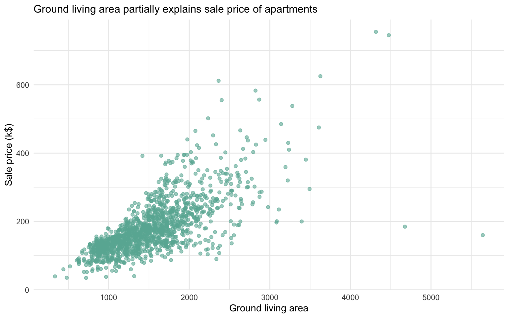
What for
A scatterplot is made to study the relationship between 2 variables. Thus it is often accompanied by a correlation coefficient calculation, that usually tries to measure the linear relationship.
However other types of relationship can be detected using scatterplots, and a common task consists to fit a model explaining Y in function of X. Here are a few patterns you can detect doing a scatterplot.
Examples
# Librarieslibrary(ggplot2)# Create datad1 <-data.frame(x =seq(1, 100), y =rnorm(100), name ="No trend")d2 <-transform(d1, y = x *10+rnorm(100, sd =60), name ="Linear relationship")d3 <-transform(d1, y = x^2+rnorm(100, sd =140), name ="Square")d4 <-data.frame(x =seq(1, 10, 0.1), y =sin(seq(1, 10, 0.1)) +rnorm(91, sd =0.6), name ="Sin")don <-do.call(rbind, list(d1, d2, d3, d4))# Plotggplot(don, aes(x = x, y = y)) +geom_point(color ="#69b3a2", alpha =0.8) +theme_minimal() +# Replacing hrbrthemes::theme_ipsum() with theme_minimal()facet_wrap(~name, scales ="free") # 'scale' should be 'scales' in facet_wrap()
Useful for:
Detecting relationships between two variables
Identifying patterns or trends in data
Spotting outliers or unusual data points
Comparing different groups or categories within the data
Variation
Scatterplots are sometimes supported by marginal distributions. It indeed adds insight to the graphic, revealing the distribution of both variables:
# Librarieslibrary(ggplot2)library(ggExtra)library(tidyverse)# Load dataset from github using base Rdata <-read.table("https://raw.githubusercontent.com/holtzy/data_to_viz/master/Example_dataset/2_TwoNum.csv", header =TRUE, sep =",")[, c("GrLivArea", "SalePrice")]# Create a ggplot2 scatterplotp <- data %>%ggplot(aes(x = GrLivArea, y = SalePrice /1000)) +geom_point(color ="#69b3a2", alpha =0.8) +theme_minimal() +# Replacing hrbrthemes::theme_ipsum() with theme_minimal()theme(legend.position ="none" )# Add marginal histogramsggMarginal(p, type ="histogram", color ="grey")
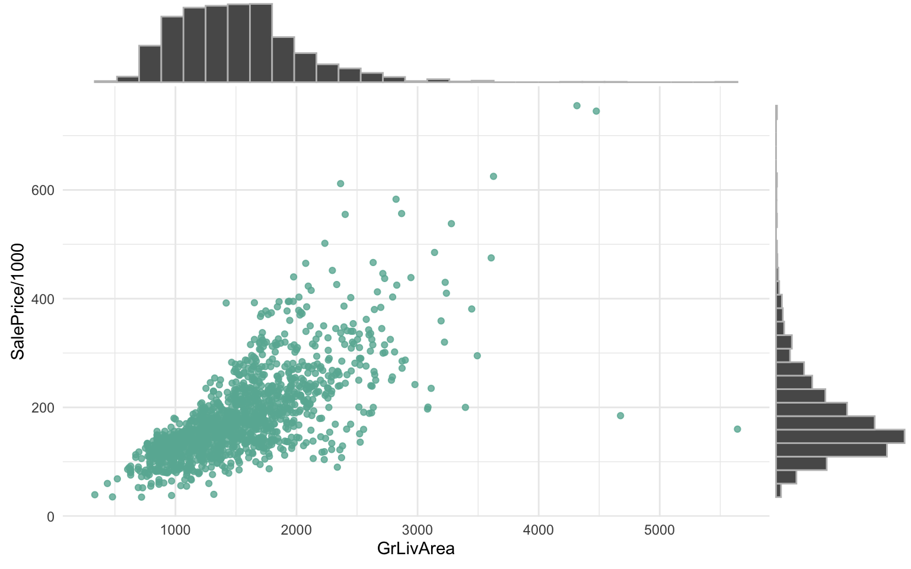
Common mistakes
Overplotting is the most common mistake when sample size is high. There are about 10 different workarounds to fix this issue.
Don’t forget to show subgroups if you have some. Indeed it can reveal important hidden patterns in your data, like in the case of the Simpson paradox.
Histogram
Definition
A barplot (or barchart) is one of the most common types of graphic. It shows the relationship between a numeric and a categoric variable. Each entity of the categoric variable is represented as a bar. The size of the bar represents its numeric value.
Here is an example showing the quantity of weapons exported by the top 20 largest exporters in 2017:
# Librarieslibrary(ggplot2)# Load dataset from github using base Rdata <-read.table("https://raw.githubusercontent.com/holtzy/data_to_viz/master/Example_dataset/7_OneCatOneNum.csv", header =TRUE, sep =",")# Barplotdata %>%filter(!is.na(Value)) %>%arrange(Value) %>%tail(20) %>%mutate(Country =factor(Country, Country)) %>%ggplot(aes(x = Country, y = Value)) +geom_bar(stat ="identity", fill ="#69b3a2") +coord_flip() +theme_minimal() +# Replacing hrbrthemes::theme_ipsum() with theme_minimal()theme(panel.grid.minor.y =element_blank(),panel.grid.major.y =element_blank(),legend.position ="none" ) +xlab("") +ylab("Weapon quantity (SIPRI trend-indicator value)")
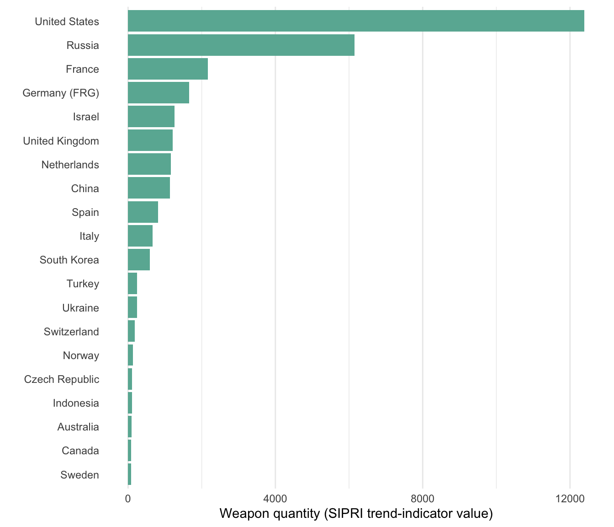
What for
A barplot shows the relationship between a numeric and a categoric variable. In the previous graphic, each country is a level of the categoric variable, and the quantity of weapon sold is the numeric variable. An ordered barplot is a very good choice here since it displays both the ranking of countries and their specific value.
A barplot can also display values for several levels of grouping. Here’s an example of a grouped barplot:
Examples
# Librarieslibrary(ggplot2)library(babynames)# Load datasetdata <- babynames %>%filter(name %in%c("Ashley", "Amanda", "Jessica", "Patricia", "Linda", "Deborah", "Dorothy", "Betty", "Helen")) %>%filter(sex =="F")# A grouped barplotdata %>%filter(name %in%c("Ashley", "Patricia", "Betty", "Helen")) %>%filter(year %in%c(1920, 1960, 2000)) %>%mutate(year =as.factor(year)) %>%ggplot(aes(x = year, y = n, fill = name)) +geom_bar(stat ="identity", position ="dodge") +scale_fill_manual(values =c("#69b3a2", "#404080", "#ffcc00", "#ff5733")) +# Custom colors instead of viridistheme_minimal() +# Replacing hrbrthemes::theme_ipsum() with theme_minimal()ylab("Number of babies")
Useful for:
Comparing values across categories
Showing the distribution of a numeric variable for different groups
Displaying rankings or ordered data
Visualizing part-to-whole relationships (in stacked bar charts)
Variation
Lollipop plot: A variation that replaces bars with segments and dots, resulting in a less cluttered figure:
# Librarieslibrary(ggplot2)# Load dataset from githubdata <-read.table("https://raw.githubusercontent.com/holtzy/data_to_viz/master/Example_dataset/7_OneCatOneNum.csv", header =TRUE, sep =",")# Plotdata %>%filter(!is.na(Value)) %>%arrange(Value) %>%mutate(Country =factor(Country, Country)) %>%ggplot(aes(x = Country, y = Value)) +geom_segment(aes(x = Country, xend = Country, y =0, yend = Value), color ="grey") +geom_point(size =3, color ="#69b3a2") +coord_flip() +theme_minimal() +# Replacing hrbrthemes::theme_ipsum() with theme_minimal()theme(panel.grid.minor.y =element_blank(),panel.grid.major.y =element_blank(),legend.position ="none" ) +xlab("")
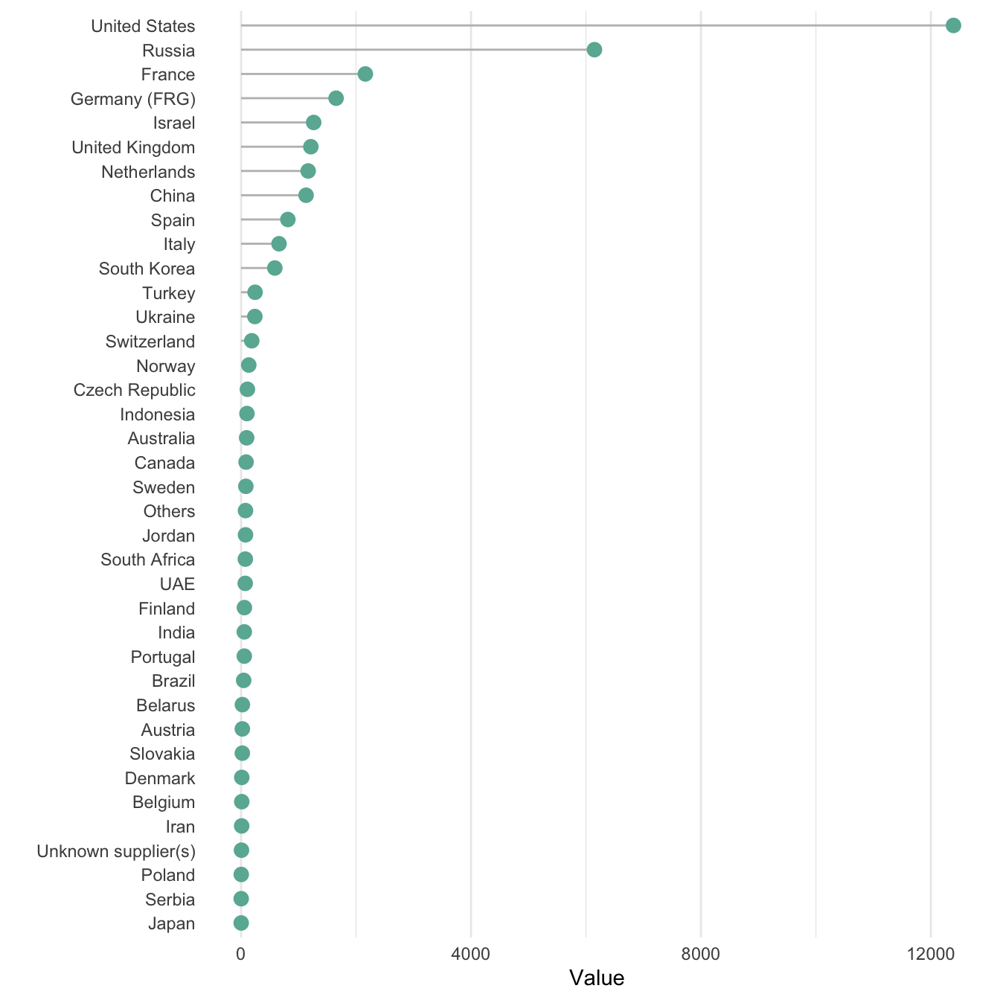
Circular barplot: Useful when you have many groups, though it sacrifices some accuracy in comparison:
# Librarieslibrary(ggplot2)library(dplyr)# Load dataset from githubdata <-read.table("https://raw.githubusercontent.com/holtzy/data_to_viz/master/Example_dataset/7_OneCatOneNum.csv", header=TRUE, sep=",")# Order datatmp <- data %>%filter(!is.na(Value)) %>%arrange(desc(Value)) %>%mutate(Country =factor(Country, Country))# Set a number of 'empty bars'empty_bar =10# Add empty bars to the datasetto_add <-matrix(NA, empty_bar, ncol(tmp))colnames(to_add) <-colnames(tmp)tmp <-rbind(tmp, to_add)tmp$id <-seq(1, nrow(tmp))# Get the name and the y position of each labellabel_tmp <- tmpnumber_of_bar <-nrow(label_tmp)angle <-90-360* (label_tmp$id -0.5) / number_of_bar # Adjust angles for label positioninglabel_tmp$hjust <-ifelse(angle <-90, 1, 0)label_tmp$angle <-ifelse(angle <-90, angle +180, angle)label_tmp$Country <-gsub("United States", "US", label_tmp$Country)label_tmp$Country <-paste(label_tmp$Country, " (", label_tmp$Value, ")", sep ="")# Make the plotggplot(tmp, aes(x =as.factor(id), y = Value)) +# x is treated as a factorgeom_bar(stat ="identity", fill =alpha("#69b3a2", 0.8)) +ylim(-7000, 13000) +theme_minimal() +theme(axis.text =element_blank(),axis.title =element_blank(),panel.grid =element_blank(),plot.margin =unit(rep(-1, 4), "cm") ) +coord_polar(start =0) +# Polar coordinates for a circular plotgeom_text(data = label_tmp, aes(x = id, y = Value +200, label = Country), color ="black", fontface ="bold", alpha =0.6, size =2.5, angle = label_tmp$angle, hjust = label_tmp$hjust, inherit.aes =FALSE) +geom_text(aes(x =24, y =8000, label ="Who sells more weapons?"), color ="black", inherit.aes =FALSE, data =data.frame())
Common mistakes
Do not confound barchart with histogram. A histogram has only a numeric variable as input and shows its distribution.
Order your bars. If the levels of your categoric variable have no obvious order, order the bars following their values.
Several values per group? Don’t use a barplot. Even with error bars, it hides information and other types of graphics like boxplot or violin are much more appropriate.
Line Chart
Definition
A line chart or line graph displays the evolution of one or several numeric variables. Data points are connected by straight line segments. It is similar to a scatter plot except that the measurement points are ordered (typically by their x-axis value) and joined with straight line segments. A line chart is often used to visualize a trend in data over intervals of time – a time series – thus the line is often drawn chronologically.
Here is an example showing the evolution of the bitcoin price between April 2013 and April 2018:
# Librarieslibrary(ggplot2)# Load dataset from githubdata <-read.table("https://raw.githubusercontent.com/holtzy/data_to_viz/master/Example_dataset/3_TwoNumOrdered.csv", header =TRUE)data$date <-as.Date(data$date)# Plotggplot(data, aes(x = date, y = value)) +geom_line(color ="#69b3a2") +ggtitle("Evolution of Bitcoin price") +ylab("Bitcoin price ($)") +theme_minimal() +# Replacing hrbrthemes::theme_ipsum() with theme_minimal()theme(plot.title =element_text(size =12) )
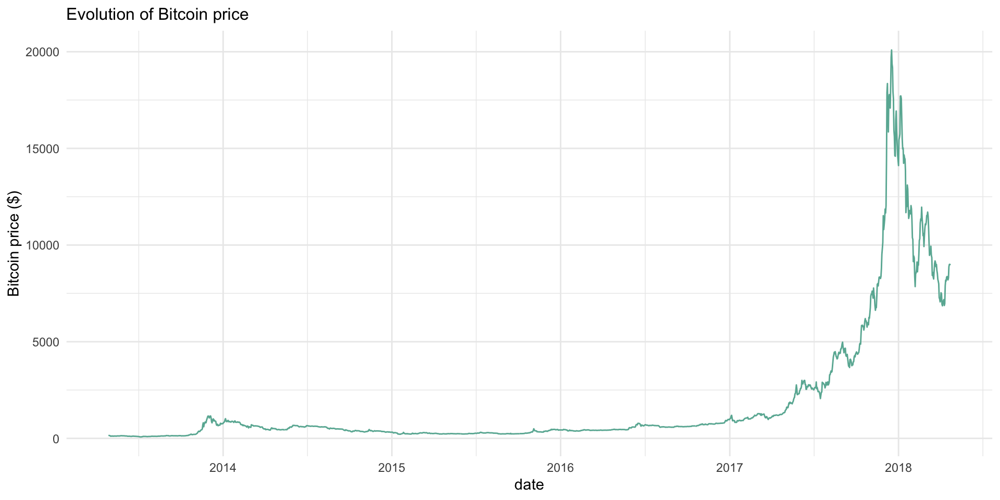
What for
Line charts can be used to show the evolution of one or several variables. Here is an example showing the evolution of three baby name frequencies in the US between 1880 and 2015:
# Librarieslibrary(ggplot2)library(babynames)# Load dataset from babynamesdon <- babynames %>%filter(name %in%c("Ashley", "Patricia", "Helen")) %>%filter(sex =="F")# Plotggplot(don, aes(x = year, y = n, group = name, color = name)) +geom_line() +scale_color_manual(values =c("#69b3a2", "#404080", "#ffcc00")) +# Custom colors to replace viridisggtitle("Popularity of American names in the previous 30 years") +theme_minimal() +# Replacing hrbrthemes::theme_ipsum() with theme_minimal()ylab("Number of babies born") +theme(plot.title =element_text(size =12) )
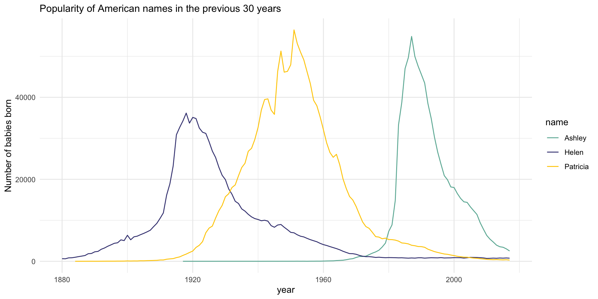
Useful for:
Visualizing trends over time
Comparing multiple variables or categories over a continuous axis
Showing the rate of change between data points
Identifying patterns, cycles, or anomalies in data
Variation
If the number of data points is low, it is advised to represent each individual observation with a dot:
# Librarieslibrary(ggplot2)# Assuming `data` is already loaded and contains `date` and `value`# Using tail to get the last 10 entries for the plotdata %>%tail(10) %>%ggplot(aes(x = date, y = value)) +geom_line(color ="#69b3a2") +geom_point(color ="#69b3a2", size =4) +ggtitle("Line chart with points") +ylab("Bitcoin price ($)") +theme_minimal() # Replacing hrbrthemes::theme_ipsum() with theme_minimal()
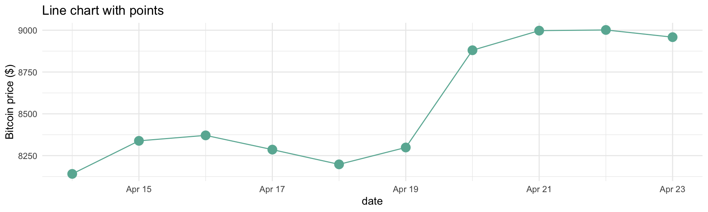
Lines are also used to show trends in a scatterplot. Here is an example using Smoothed conditional means and showing confidence interval around it:
# Librarieslibrary(ggplot2)# Plot using the mpg datasetggplot(mpg, aes(displ, hwy)) +geom_point() +geom_smooth(color ="#69b3a2") +theme_minimal()
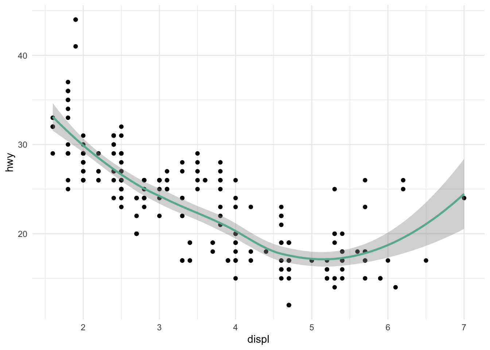
Common caveats
The line chart is subject to a lot of discussion concerning potential caveats:
To cut or not to cut the Y axis? Whether or not the Y axis must start at 0 is a hot topic leading to intense debates. Generally, line plots do not need to start at 0 since it allows observing patterns more efficiently.
Line Chart
Common caveats
The line chart is subject to a lot of discussion concerning potential caveats:
To cut or not to cut the Y axis? Whether or not the Y axis must start at 0 is a hot topic leading to intense debates. Generally, line plots do not need to start at 0 since it allows observing patterns more efficiently.
# Librarieslibrary(ggplot2)library(patchwork)# Create a small dataset with less dramatic changesset.seed(123)small_data <-data.frame(date =seq(as.Date("2023-01-01"), by ="month", length.out =10),value =100+cumsum(rnorm(10, mean =0.5, sd =1)))# Plot 1: Full context, no cuttingp1 <- small_data %>%ggplot(aes(x = date, y = value)) +geom_line(color ="#69b3a2") +geom_point(color ="#69b3a2", size =4) +ggtitle("Not cutting (shows full context)") +ylab("Value") +theme_minimal() +# Replacing hrbrthemes::theme_ipsum() with theme_minimal()ylim(0, max(small_data$value))# Plot 2: Cutting y-axis to exaggerate differencesp2 <- small_data %>%ggplot(aes(x = date, y = value)) +geom_line(color ="#69b3a2") +geom_point(color ="#69b3a2", size =4) +ggtitle("Cutting (exaggerates differences)") +ylab("Value") +theme_minimal() +# Replacing hrbrthemes::theme_ipsum() with theme_minimal()ylim(min(small_data$value) -1, max(small_data$value) +1)# Combine plots using patchworkp1 + p2
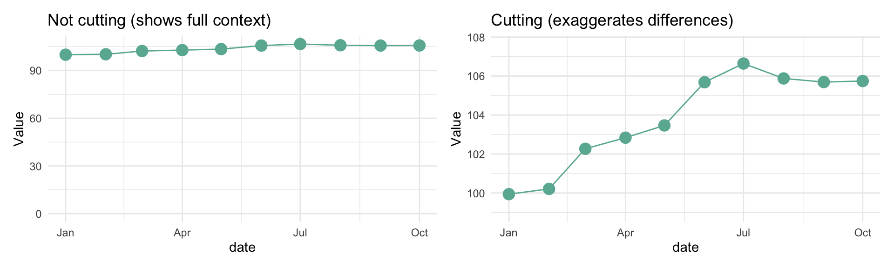
If you need to compare the evolution of 2 different variables, avoid using dual axis. Dual axis can show very different results depending on what range you apply to the axis.
Mind the spaghetti chart: too many lines make the chart unreadable.
Think about the aspect ratio of the graphic, extreme ratios make the chart unreadable.
Word Cloud
Definition
A word cloud (also called tag cloud or weighted list) is a visual representation of text data. Words are usually single words, and the importance of each is shown with font size or color.
Here is an example showing the most frequent words used by Nekfeu, a famous French rapper, in a few of his songs:
# Librarieslibrary(wordcloud)# Example data (random words with frequencies)words <-c("data", "science", "AI", "Psychology", "learning", "neural", "network", "SpenserReid", "model", "Hannibal", "research", "statistics", "RStudio", "python", "visualization")frequencies <-c(10, 8, 15, 6, 12, 5, 7, 9, 11, 8, 10, 9, 6, 12, 7)# Create a word cloudset.seed(123) # For reproducibilitywordcloud(words = words, freq = frequencies, min.freq =1,scale =c(3, 0.5), colors =brewer.pal(8, "Dark2"),random.order =FALSE, rot.per =0.35)
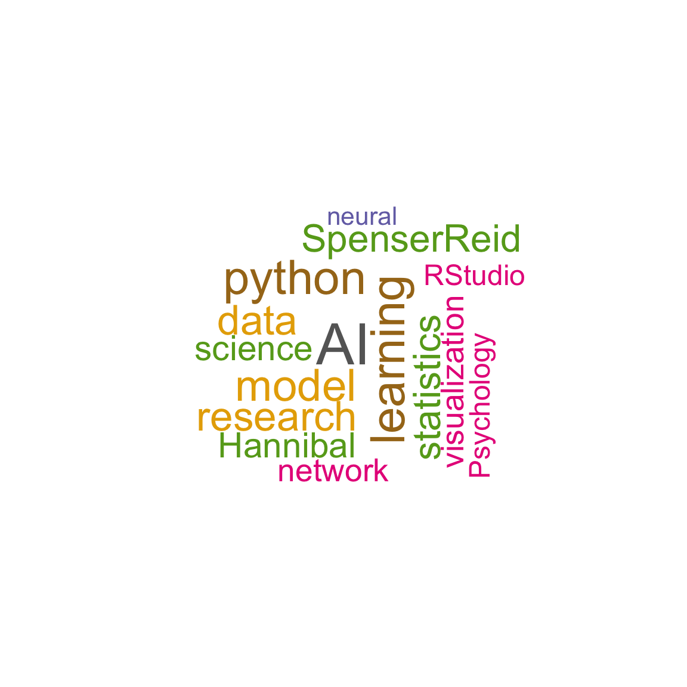
What for
Word clouds are useful for:
Quickly perceiving the most prominent terms
Locating a term alphabetically to determine its relative prominence
Creating visually appealing representations of text data
They are widely used in media and well understood by the public.
Useful for:
Summarizing large amounts of text data
Highlighting key themes or topics in a dataset
Creating engaging visuals for presentations or reports
Comparing word frequencies across different texts or sources
Example
Here’s an alternative representation using a lollipop plot, which addresses some of the limitations of word clouds:
# Load necessary librarieslibrary(dplyr)library(ggplot2)# Example data (random words with frequencies)words <-c("data", "science", "AI", "Psychology", "learning", "neural", "network", "SpenserReid", "model", "Hannibal", "research", "statistics", "RStudio", "python", "visualization")frequencies <-c(10, 8, 15, 6, 12, 5, 7, 9, 11, 8, 10, 9, 6, 12, 7)# Create a data frame from the provided words and frequenciesword_data <-data.frame(word = words, freq = frequencies)# Plot using ggplot2word_data %>%mutate(word =factor(word, word)) %>%ggplot(aes(x = word, y = freq)) +geom_segment(aes(x = word, xend = word, y =0, yend = freq), color ="grey") +geom_point(size =3, color ="#69b3a2") +coord_flip() +theme_minimal() +# Replacing hrbrthemes::theme_ipsum() with theme_minimal()theme(panel.grid.minor.y =element_blank(),panel.grid.major.y =element_blank(),legend.position ="none" ) +xlab("") +ylab("Frequency")
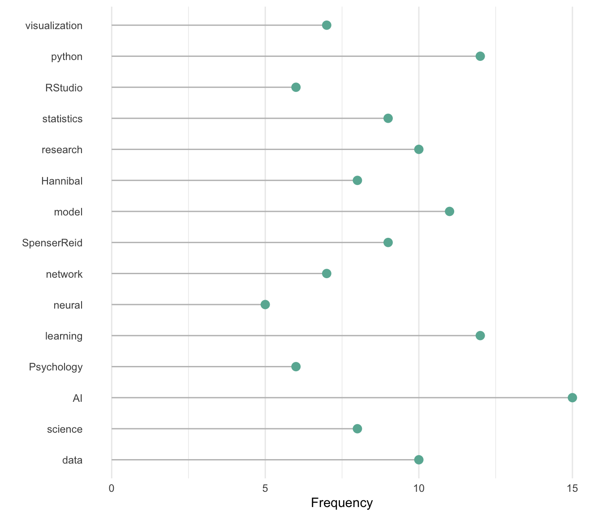
Variation
Many variations exist for word clouds:
Different shapes, sometimes using the shape of an object related to the topic
Varying text orientation, font, size, and colors
Interactive word clouds that change or provide additional information on hover
Common mistakes
Relying too heavily on word clouds for accurate data representation
Ignoring the limitations of area as a metaphor for numeric values
Not accounting for the bias created by longer words appearing larger
Using word clouds when more precise visualizations (like bar charts or lollipop plots) would be more appropriate
Creating overly complex or cluttered word clouds that are difficult to read or interpret
Word clouds, while visually appealing, are often criticized for their lack of accuracy in conveying information. Consider using them primarily for aesthetic purposes or in conjunction with more precise data visualization methods.
Psychology Data from Year 1
# Load necessary librarieslibrary(ggplot2)# Load the datasetdata <-read.csv("materials/data/Y1W3_data.csv")# Remove all NA valuesdata <-na.omit(data)# Create a bar chart for the 'DogCatBoth' variableggplot(data, aes(x = DogCatBoth)) +geom_bar(fill ="steelblue", color ="black") +theme_minimal() +labs(title ="Distribution of DogCatBoth Responses",x ="Dog, Cat, or Both",y ="Count")
# Create a bar chart for the 'InsectApocalypse' variableggplot(data, aes(x = InsectApocalypse)) +geom_bar(fill ="darkgreen", color ="black") +theme_minimal() +labs(title ="Distribution of Insect Apocalypse Responses",x ="Insect Apocalypse Belief",y ="Count")
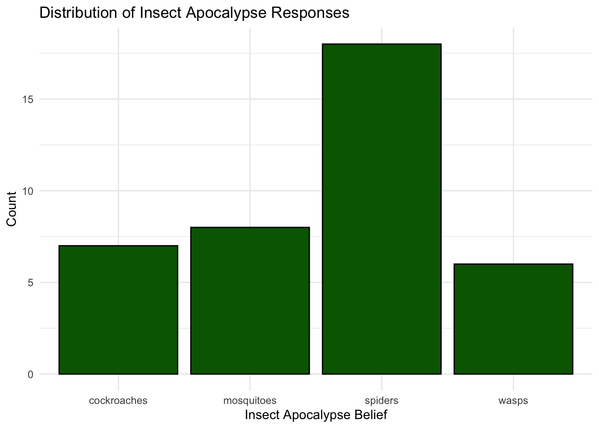
# Create a bar chart for the 'LarkorOwl' variableggplot(data, aes(x = LarkorOwl)) +geom_bar(fill ="purple", color ="black") +theme_minimal() +scale_x_discrete(labels =function(x) substr(x, 1, 4)) +labs(title ="Distribution of Lark or Owl Responses",x ="",y ="Count")
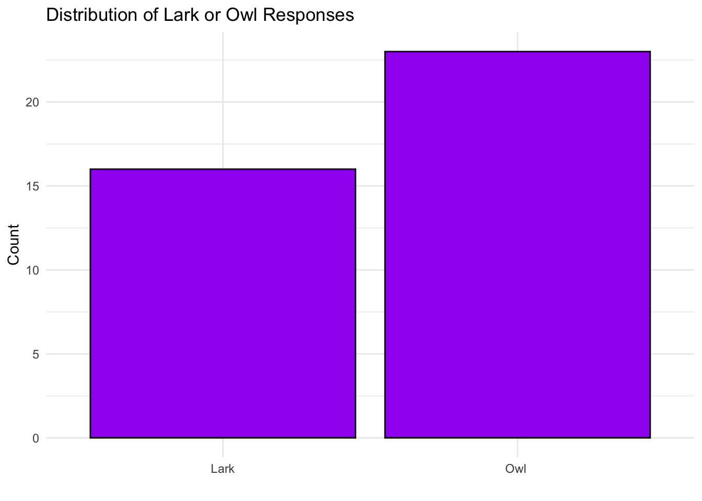
# Count for each columncat("Count for DogCatBoth: ", sum(!is.na(data$DogCatBoth)), "\n")
Count for DogCatBoth: 39
cat("Count for InsectApocalypse: ", sum(!is.na(data$InsectApocalypse)), "\n")
Count for InsectApocalypse: 39
cat("Count for LarkorOwl: ", sum(!is.na(data$LarkorOwl)), "\n")
The following object is masked from 'package:purrr':
discard
The following object is masked from 'package:readr':
col_factor
# Read the datadata <-read.csv("materials/data/Y1W3_data.csv")# Select relevant columns and remove rows with NAtipi_data <- data %>%select(LarkorOwl, E_TIPI, A_TIPI, C_TIPI, ES_TIPI, O_TIPI) %>%na.omit()# Shorten labels to Lark and Owltipi_data$LarkorOwl <-ifelse(grepl("Lark", tipi_data$LarkorOwl), "Lark", "Owl")# Reshape the data for radar plotradar_data <- tipi_data %>%gather(key ="Trait", value ="Score", -LarkorOwl) %>%mutate(Trait =factor(Trait, levels =c("E_TIPI", "A_TIPI", "C_TIPI", "ES_TIPI", "O_TIPI")))# Calculate mean scores for each trait by Lark/Owl preferencemean_scores <- radar_data %>%group_by(LarkorOwl, Trait) %>%summarize(Mean_Score =mean(Score)) %>%ungroup()
`summarise()` has grouped output by 'LarkorOwl'. You can override using the
`.groups` argument.
# Create a function to generate coordinates for the radar chartcoord_radar <-function(theta ="x", start =0, direction =1) { theta <-match.arg(theta, c("x", "y")) r <-if (theta =="x") "y"else"x"ggproto("CordRadar", CoordPolar, theta = theta, r = r,start = start, direction =sign(direction),is_linear =function(coord) TRUE)}# Create the radar plotradar_plot <-ggplot(mean_scores, aes(x = Trait, y = Mean_Score, group = LarkorOwl, color = LarkorOwl)) +geom_polygon(aes(fill = LarkorOwl), alpha =0.25) +geom_line(size =1) +geom_point(size =3) +scale_y_continuous(limits =c(0, 5), breaks =seq(0, 5, 1)) +scale_color_manual(values =c("Lark"="#FF6B6B", "Owl"="#4ECDC4")) +scale_fill_manual(values =c("Lark"="#FF6B6B", "Owl"="#4ECDC4")) +coord_radar() +facet_wrap(~ LarkorOwl, ncol =2) +theme_minimal() +theme(axis.text.x =element_text(size =10),axis.text.y =element_blank(),axis.title =element_blank(),panel.grid.major =element_line(color ="gray", size =0.3),panel.grid.minor =element_blank(),legend.position ="none" ) +labs(title ="TIPI Trait Scores by Lark/Owl Preference",subtitle ="E: Extraversion, A: Agreeableness, C: Conscientiousness, ES: Emotional Stability, O: Openness")
Warning: Using `size` aesthetic for lines was deprecated in ggplot2 3.4.0.
ℹ Please use `linewidth` instead.
Warning: The `size` argument of `element_line()` is deprecated as of ggplot2 3.4.0.
ℹ Please use the `linewidth` argument instead.
# Display the plotprint(radar_plot)
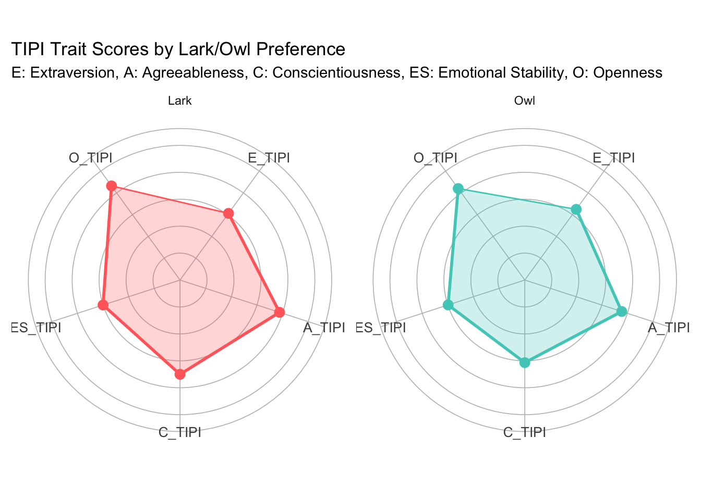
# Save the plot as a PNG fileggsave("tipi_radar_plots.png", radar_plot, width =12, height =6, dpi =300)